What's on
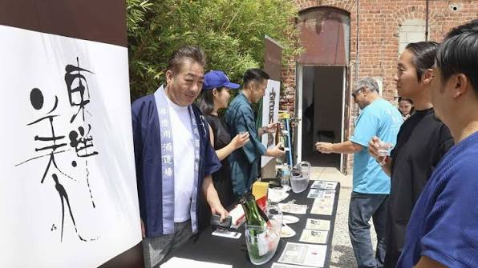
event-sasara-summit.jpg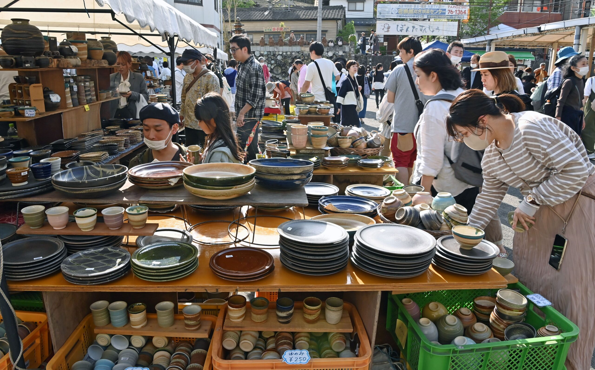
event-mashiko-fair-autumn.jpg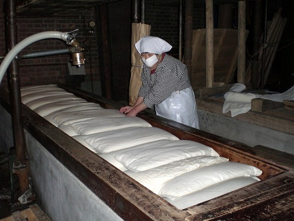
event-shibori-open-days.jpg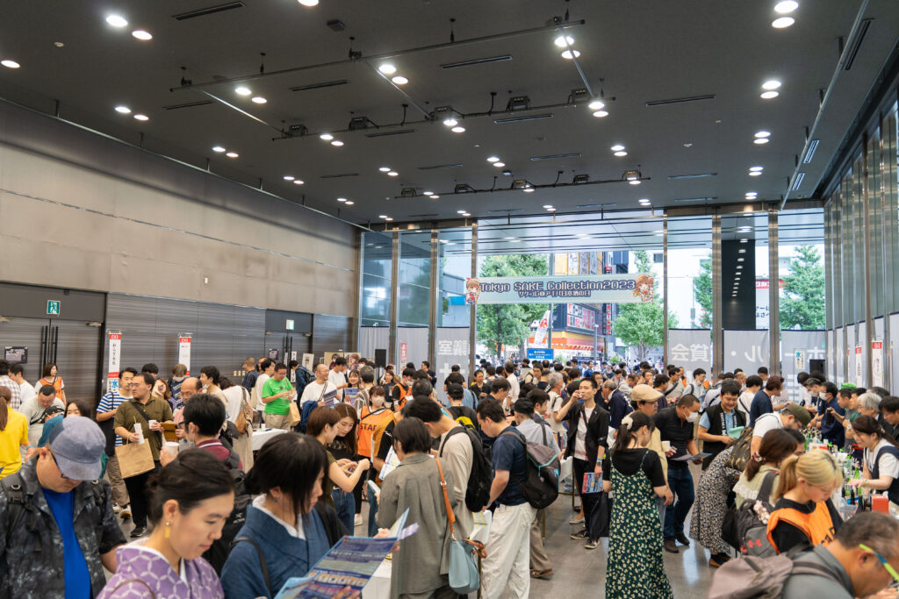
event-shimotsuke-toji-tokyo.jpg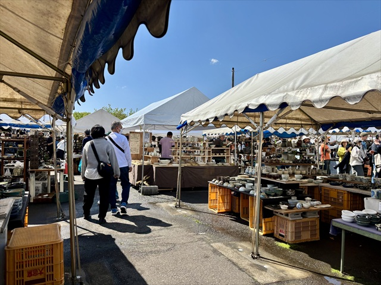
event-mashiko-fair-spring.jpg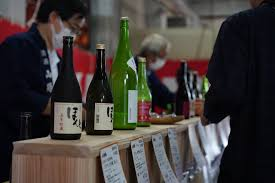
event-shimotsuke-toji-cover.jpgShimotsuke Tōji new sake release
- Date
- Wed 17 March 2027
- Time
- 18:00–20:30, doors 17:45
- Where
- Tokyo — venue announced with tickets
- Price
- ¥6,000 advance
- Tickets
- e+ (eplus), on sale early February
- Language
- Japanese. Some brewers speak English.
- Also
- Osaka, Wed 19 May 2027
Why this one
Most sake regions have an old guild that trains and certifies brewers. Tochigi had none, so in 2006 a group of young brewery workers built their own: a practical exam, a blind tasting and a written paper, run through the prefectural technology centre. Twenty-two people had passed by 2016.
This is the one night they all pour together, and the people behind the tables are the ones who made it. You can ask them anything, and they'll tell you.
Buy early. Tokyo sold out about three weeks ahead in 2026.
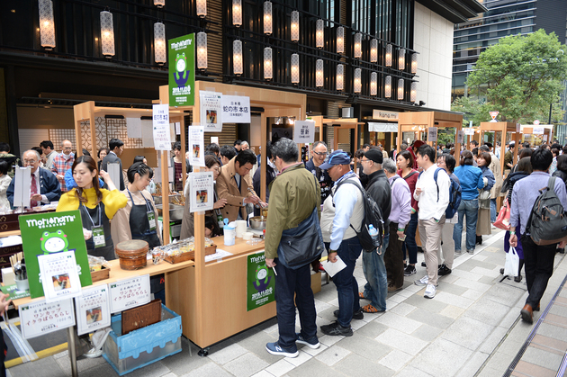
event-shimotsuke-toji-room.jpgBefore you go
 brewery-senkin.jpg
brewery-senkin.jpg brewery-sohomare.jpg
brewery-sohomare.jpg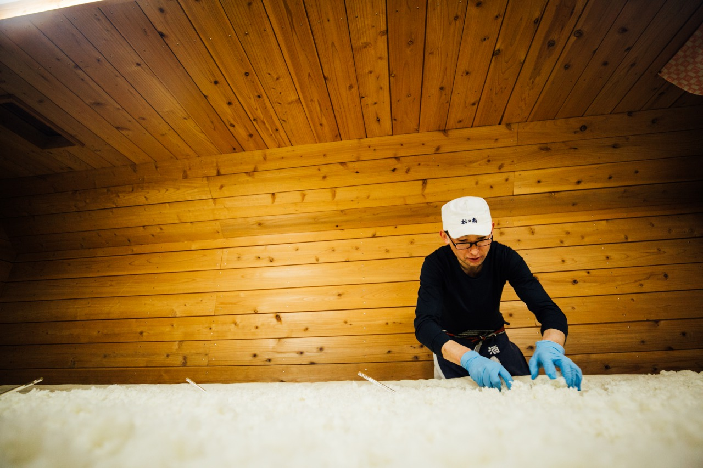
brewery-matsui.jpg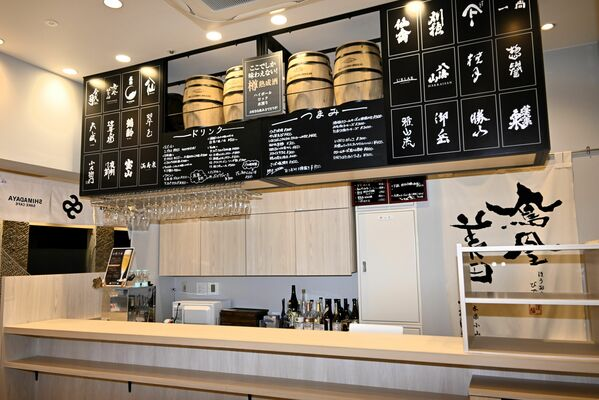
shop-shimadaya-miyamirai.jpg event-sasara-summit-cover.jpg
event-sasara-summit-cover.jpg
Sasara Light Cube — Tochigi Sake Summit
- Date
- Sat 5 September 2026
- Sessions
- 12:30–14:30 · 16:00–18:00
- Where
- Light Cube Utsunomiya, 5 min from the station east exit
- Price
- ¥4,500 advance · ¥5,000 door
- Pours
- Unlimited within your session
- Language
- Japanese. Brewery staff, so patience helps.
- Getting home
- Utsunomiya is 50 min from Tokyo on the Shinkansen
Why this one
Until 2024 the brewers' association ran a permanent tasting room in Utsunomiya called Sasara. It opened in 1999, weekday evenings only, two hours, ten glasses a person — kept small on purpose so it would not take trade from the bars nearby.
The building was falling apart, the association moved out, and Sasara closed. This replaced it: one day a year, twenty-four breweries, in a hall.
If you only get one day in Tochigi, make it this one. Nowhere else puts this many breweries in front of you at once.
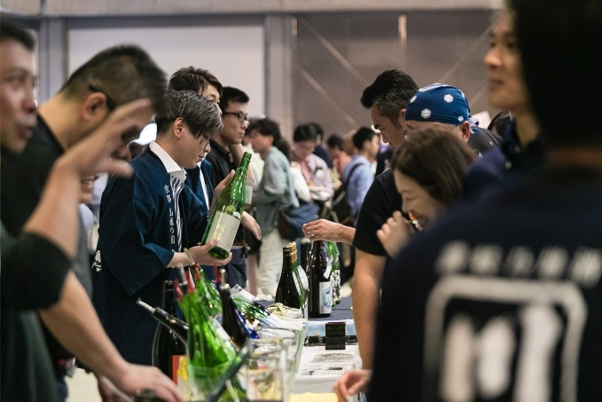
event-sasara-summit-hall.jpgBefore you go
brewery-sohomare.jpg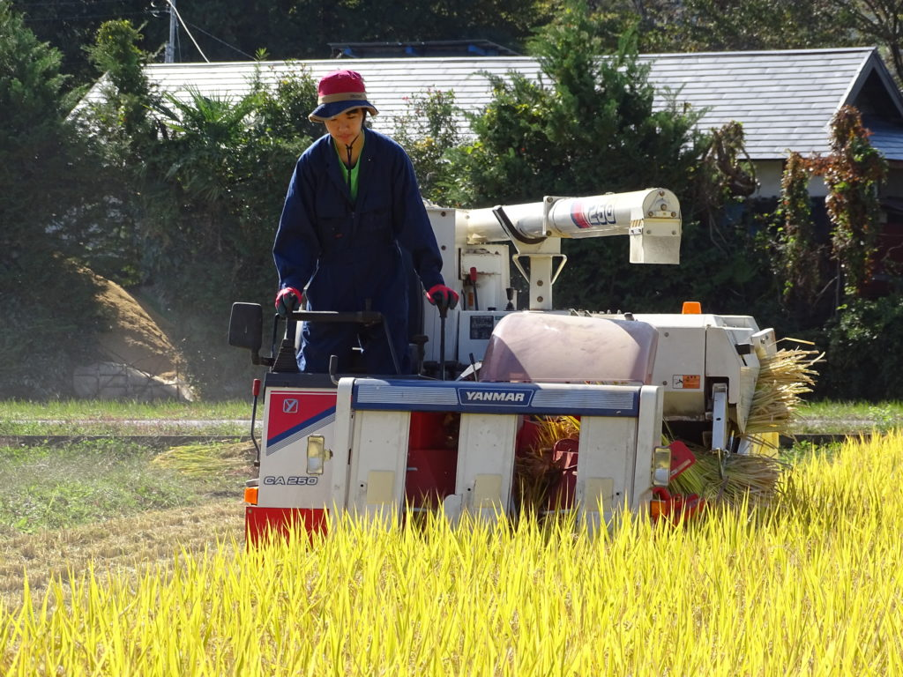
brewery-tentaka.jpg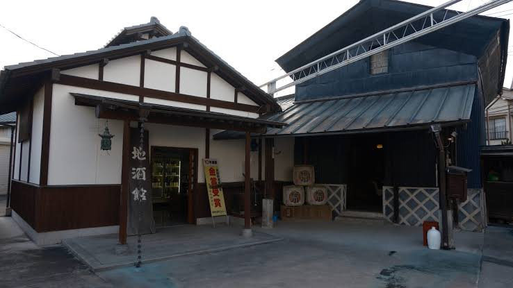
brewery-tsuji-zenbei.jpg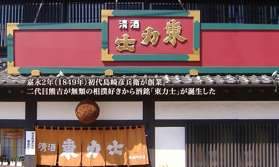
brewery-shimazaki.jpg place-masashi-gyoza.jpg
place-masashi-gyoza.jpg place-mashiko-day.jpg
place-mashiko-day.jpg